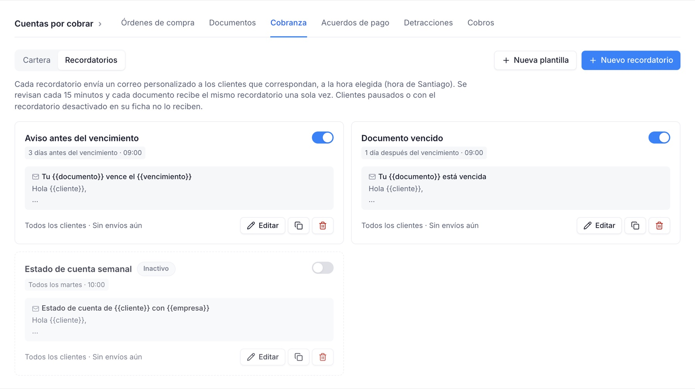
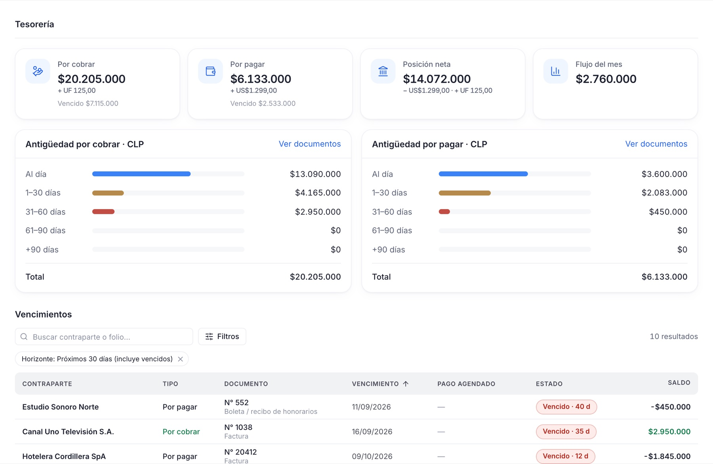
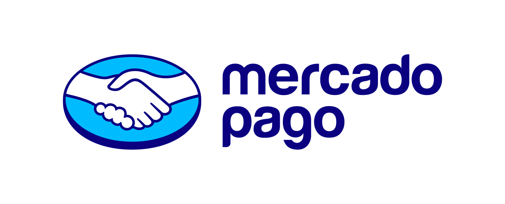

Cuentas por cobrar, por pagar y tesorería en un solo lugar.
Para empresas en Chile, Perú y México. Documentos, pagos, cobranza, conciliación bancaria y portal para tus clientes, en una sola plataforma.


Un recorrido por la app
Capturas reales de Produ Finanzas, con datos de ejemplo.
Lo que facturas, con su estado al día.
Registra documentos a mano o súbelos por XML y PDF. Cada cobro se asigna a uno o varios documentos, sin sobrepagos.
- Importador de XML y PDF, sin duplicados
- Pendiente, parcial, vencido y pagado
- Envío por correo con el PDF adjunto

Una cartera que se gestiona sola.
Ves la deuda, el atraso y la próxima acción de cada cliente, y abres su ficha con todo el historial.
- Deuda total, vencida y antigüedad por cliente
- Ficha con correos, gestiones y cobros
- Acuerdos de pago en cuotas
Los avisos salen a la hora que definas.
Antes del vencimiento, el día, después o en un resumen semanal. Cada documento recibe el mismo recordatorio una sola vez.
- Plantillas con vista previa exacta
- Botón “Pagar” con link de MercadoPago
- Historial de envíos con detalle

Aprobar antes de pagar.
Las facturas de proveedores avanzan por un tablero: por aprobar, aprobado, pago solicitado, programado y pagado.
- Flujo de aprobación
- Órdenes de compra con saldo por facturar
- Distribución por categoría y centro de costo

Tu caja, por moneda.
Por cobrar menos por pagar, la antigüedad de ambos saldos y los vencimientos del mes, sin mezclar monedas.
- Posición neta por moneda
- Antigüedad de saldos por cobrar y por pagar
- Vencimientos de los próximos 30 días

Cada país con sus reglas
Una misma cuenta puede administrar empresas de distintos países. Los montos se guardan en su moneda y nunca se suman entre monedas distintas.
| País | Identificación y documentos | Impuesto y moneda | Lo particular |
|---|---|---|---|
| CLChile | RUT. DTE del SII por XML y PDF. | IVA 19 %. CLP y UF. | Sincroniza compras y ventas del SII y conecta cuentas bancarias con Fintoc. Ver Chile |
| PEPerú | RUC. Comprobantes de SUNAT por XML y PDF. | IGV 18 %. PEN. | Detracciones (SPOT) con constancias de depósito, Contable.pe y Yape/Plin. Ver Perú |
| MXMéxico | RFC. CFDI 3.3 y 4.0, por UUID, desde XML. | IVA 16 %. MXN. | Bancos mexicanos y SPEI como forma de pago. Ver México |
Para quién es
Gerentes y dueños de pyme
Saber cuánto te deben, cuánto debes y cuánta caja tienes, sin armar planillas.
Finanzas y contabilidad
Menos digitación de facturas, menos conciliación a mano y pagos con aprobación.
Equipos de cobranza
Recordatorios automáticos, historial por cliente y acuerdos de pago ordenados.
Estudios y holdings
Varias empresas, incluso de distintos países, desde un solo usuario.
Conectado con lo que ya usas
Cobros online, bancos, documentos tributarios y archivos, para no digitar nada dos veces.

FintocContable.peXML SII · SUNAT · SATExcel / CSVNo emite facturas electrónicas. Registra y gestiona las que emites con tu sistema de facturación, importándolas por XML o sincronizándolas, según el país.
Tus datos, aislados por empresa
Cada empresa está separada de las demás a nivel de base de datos, y las credenciales de las integraciones se guardan cifradas en el servidor.
- Roles
- Dueño, administrador, finanzas y solo lectura.
- Auditoría
- Los cambios críticos quedan registrados.
- Pagos
- Un pago online solo se registra con confirmación firmada.
Preguntas frecuentes
¿En qué países funciona?
Chile, Perú y México.
¿Puedo manejar varias empresas?
Sí, desde una misma cuenta, incluso de distintos países.
¿Emite facturas electrónicas?
No. Registra y gestiona los comprobantes que emites con tu sistema de facturación, importándolos por XML o sincronizando, según el país.
¿Se conecta con el SII?
Sí, en Chile (compras y ventas) mediante Fintoc.
¿Y con SUNAT o el SAT?
En Perú hay integración con Contable.pe y manejo de detracciones. En México se importan los CFDI por XML.
¿Lo vemos con tu operación?
Agenda una demo y revisamos cómo quedaría tu empresa en Produ Finanzas.